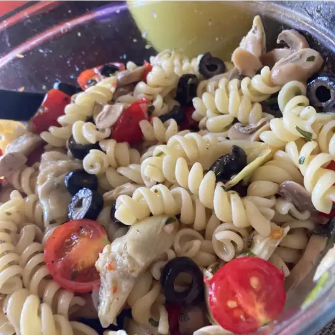

Pasta Recipe

Description
This pasta salad is quick and easy to make. The liquid from the marinated artichoke hearts makes an excellent dressing.
Ingredients
- 1 cup salad macaroni, or other medium-size pasta
- 1 (6.5 ounce) jar marinated artichoke hearts
- ½ cup mushrooms, quartered
- 1 cup cherry tomatoes, halved
- 1 cup pitted black olives
- 1 tablespoon chopped fresh parsley
- ½ teaspoon dried basil
- ½ tablespoon dried oregano
- 2 cloves garlic, minced
- salt and pepper to taste
Steps
- Bring a large pot of salted water to boil; add pasta and boil until al dente according to packaging instructions, 8 to 10 minutes. Drain well and rinse with cold water.
- In a large mixing bowl, combine pasta, artichoke hearts, mushrooms, tomatoes, olives, parsley, basil, oregano, garlic, salt and pepper; toss well.
- Refrigerate for at least 4 hours. Before serving, season the pasta dish with salt and pepper to taste.